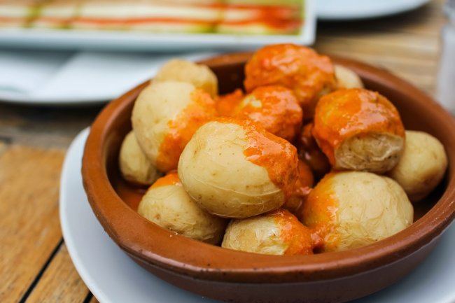
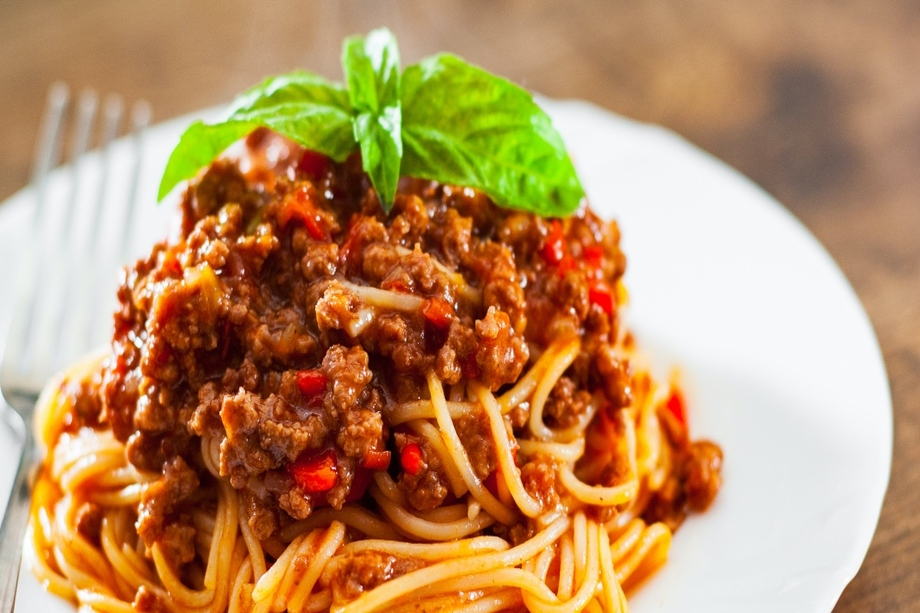
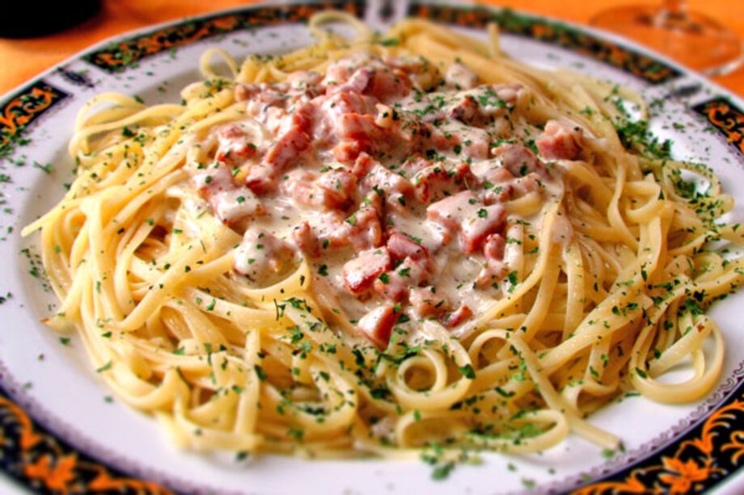
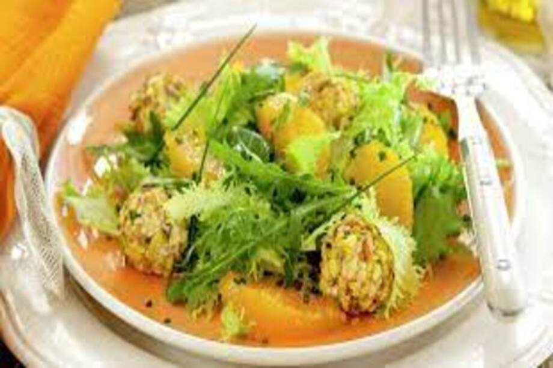
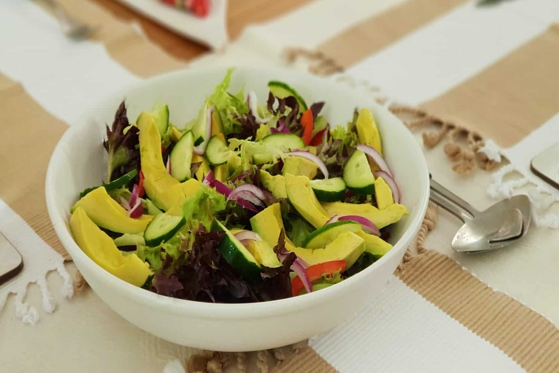
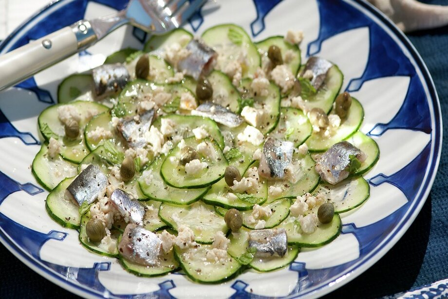
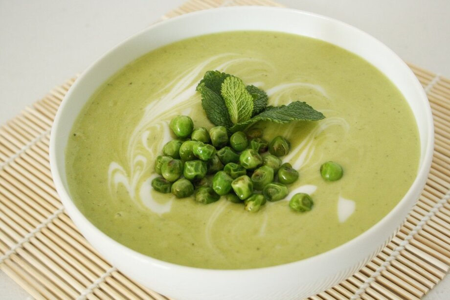

|
Arepas
Ingredientes
- 800 gramos de harina de maiz
- 500 mililitros de agua
- 1 cucharada pequeña de sal
- 1 cucharada de aceite
- Queso en lonchas al gusto
|

Papas con mojo
Ingredientes
- 1 kg de patatas nuevas pequeñas.
- 200 gr de sal.
- 2 rodajas de limón.
- Agua
- Para el mojo
- Entre media cabeza y una cabeza entera de ajos
- 2 pimientas piconas o 3-4 guindillas grandes secas
- 1 cucharadita de postre de comino en grano o en polvo
- 1 cucharadita de postre de pimentón dulce
- 30 ml de vinagre de vino blanco
- 120 ml de aceite de oliva virgen extra
- Sal gruesa al gusto
|
Sushi
Ingredientes
- 1 vaso grande de Arroz Sundari Sushi
- 1 vaso grande de Agua
- 75 ml de vinagre de arroz
- 3 cucharadas de azúcar
- 1 cucharadita de sal
- 2 láminas de Alga nori deshidrata
- 1 zanahoria
- medio pepino
- medio aguacate
- 150g de salmon
- Wasabi
|
Buñuelos
Ingredientes
- 2 tazas de queso costeño rallado o cualquier queso salado
- 2 tazas de harina de maíz
- 1 cucharada de almidón de yuca (Tapioca)
- media taza de leche
- 1 cucharadita de azúcar
- 2 huevos
- 1 cucharada de polvo de hornear
- 1 pizca de sal
- Aceite para freír
|

Espaguetis a la boloseña
Ingredientes
- 400 gr de spaghetti
- 300 gr de carne picada (100 de magro de cerdo y 200 de babilla de ternera)
- 1 zanahoria
- 1 cebolla
- 100 ml de vino blanco
- 200 gr de salsa de tomate o tomate frito
- 50 ml de leche
- Orégano
- Unas hojas de albahaca para decorar
- Aceite de oliva, sal y pimienta negra recién molida
|

Espaguetis a la carbonara
Ingredientes
- 400g de espaquetis
- 2 huevos
- 150g de queso curado
- 120g de bacon o panceta
- sal y pimineta
- un pequeño chorrito de aceite de oliva
|

Tarta de manzana
Ingredientes
- 1 kg de manzanas golden
- 2 huevos
- 4 cucharadas de maizena
- 4 de harina de repostería
- 8 cucharadas de azúcar
- 1 vaso de leche entera
- 1 sobre de levadura
- la ralladura de un limón
- el zumo de medio limón
- mermelada de albaricoque o melocotón
- mantequilla para engrasar el molde
|

Ensalada con naranja,queso y pistachos
Ingredientes
- 200 gramos de Escarola
- 50 gramos de Rúcula
- 2 Naranja
- 300 gramos de Queso De Cabra en rulo
- 50 gramos de Pistachos
- 5 cucharadas de Aceite De Oliva virgen
- 1 cucharada de Vinagre De Jerez
- Cebollino
- Sal
|

Enslada con aguacate
Ingredientes
- 1 bolsa de brotes tiernos
- 8 fresones
- 32 fresas
- 16 tomates cherry
- 1 aguacate
- 1 dátil
- 1/2 limón
- 1 naranja
- 1 cucharada de aceite de oliva
- 1 cucharada de semillas de amapola
- Pimienta negra recién molida
|

Carpaccio de pepino con sardinas
Ingredientes
- 2 pepinos
- 12 sardinas limpias y partidas en filetes
- 75 g de queso de cabra o feta
- 1 limón
- Pimienta
- Para la vinagreta
- 6 cucharadas de aceite de oliva
- 2 cucharadas de vinagre de Jerez
- Alcaparras
- 1 ramita de menta
- Sal
|

Crema de guisantes y yogurt de coco
Ingredientes
- 300 g de guisantes congelados
- 3 patatas pequeñas
- 125 g de yogur de coco
- 1/2 vaina de apio
- 1 cebolla tierna
- 1 manojo de hierbabuena fresca
- Aceite de oliva virgen extra
- Agua
- Sal
|